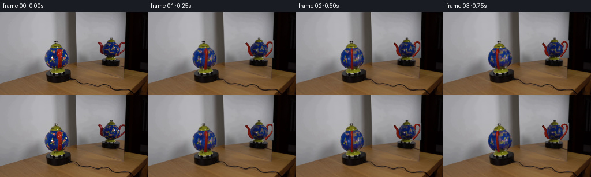
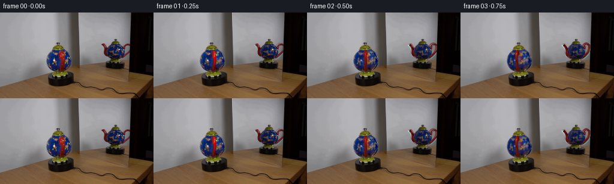
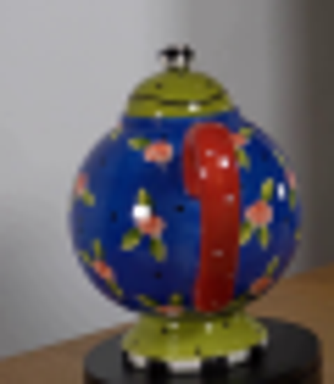
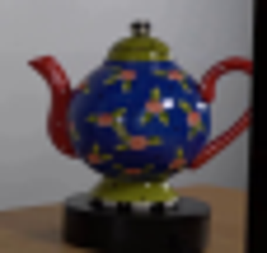
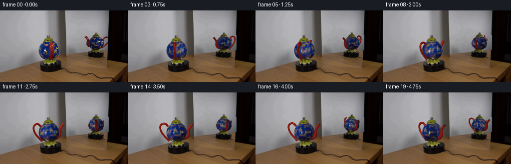
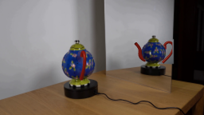
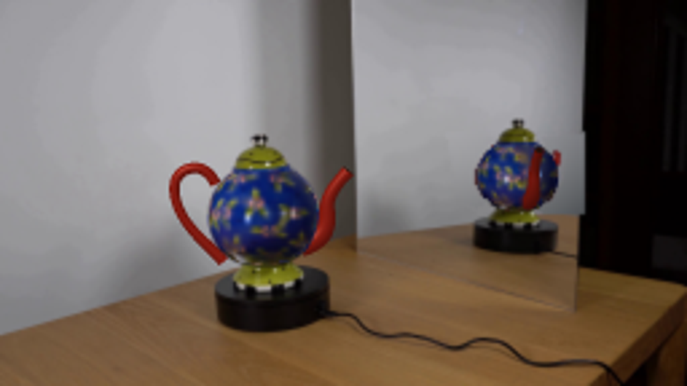
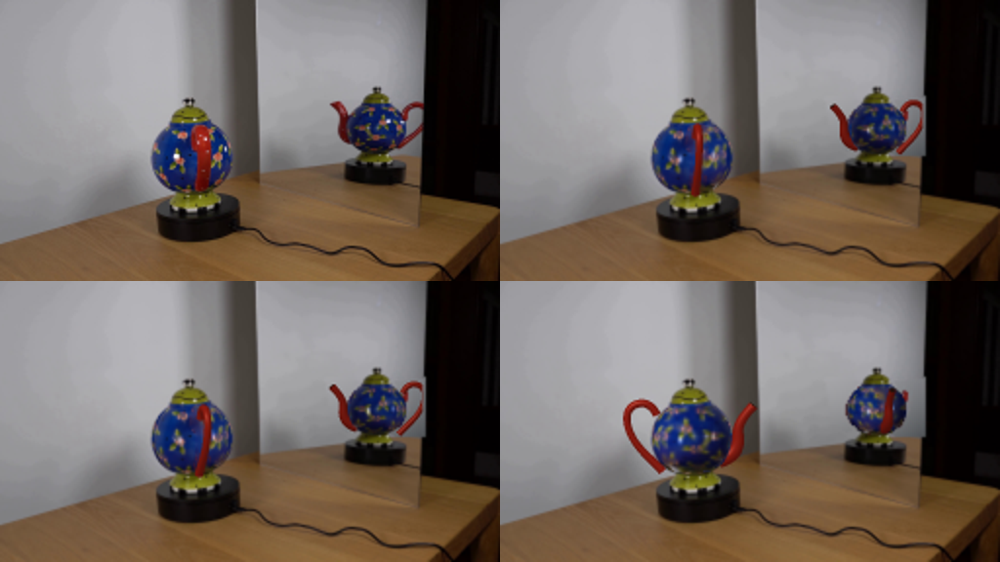
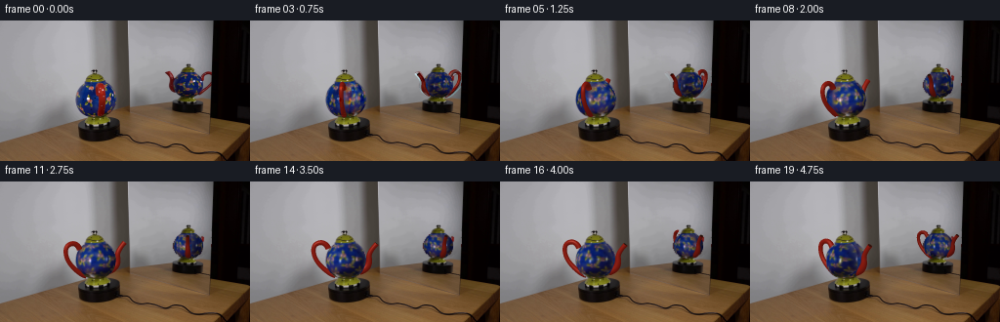
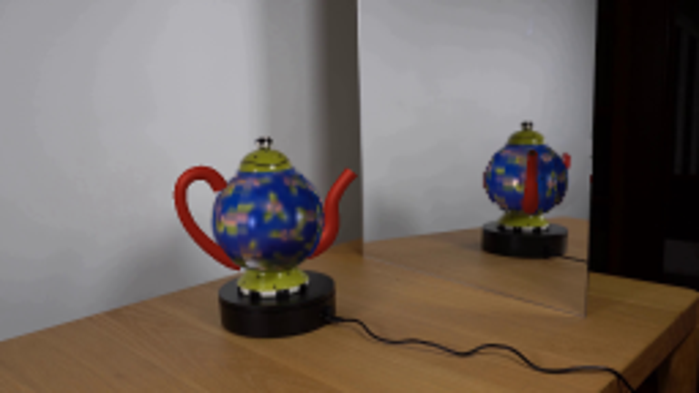

CODING AGENTS AS PIXEL WORLD MODELS
traex/GPT-6.1-Sol · 0123
点击播放 · 原生 RGB 像素
逐轮保存的候选
回放视频、检查图与代码变化。
每份候选均可单独播放。实际图片检查记录在下方工具轨迹中。
候选 01播放与检查图
点击播放 · 原生 RGB 像素


展开代码变化
--- 上一保存版本
+++ 本次保存版本
@@ -0,0 +1,205 @@
+from pathlib import Path
+import numpy as np
+from PIL import Image, ImageDraw
+import cv2
+from scipy.ndimage import map_coordinates, distance_transform_edt, gaussian_filter
+from scipy.interpolate import CubicSpline
+import artifact_io
+
+ROOT=Path(__file__).resolve().parent
+IM=np.array(Image.open(ROOT/'first_frame.png').convert('RGB'))
+S=3; H,W=144*S,256*S
+E=np.deg2rad(6); CE,SE=np.cos(E),np.sin(E)
+HC=26.3; RX=20.35; RY=21.3; RZ=20.35
+VIEWS=[dict(cx=97.8,base=106.0,scale=1.,offset=0.,parity=1,exposure=1.),
+ dict(cx=192.6,base=84.8,scale=.735,offset=np.deg2rad(109),parity=-1,exposure=.85)]
+YY,XX=np.mgrid[0:H,0:W].astype(float); XX=(XX+.5)/S-.5; YY=(YY+.5)/S-.5
+
+def poly_mask(points):
+ m=Image.new('L',(256,144)); ImageDraw.Draw(m).polygon(points,fill=255)
+ return np.array(m)
+# The axisymmetric ceramic foot and lid, along with the platform, stay fixed.
+BODYMASKS=[poly_mask([(89,62),(108,62),(112,67),(116,72),(118,79),(118,86),(114,92),(109,96),(102,99),(93,99),(86,96),(81,92),(78,86),(77,79),(79,72),(83,67)]),
+ poly_mask([(185,53),(200,53),(204,57),(207,61),(208,67),(205,73),(200,77),(193,79),(186,77),(180,73),(177,68),(177,63),(180,57)])]
+# Recover the wall where the projecting spout and handle stood in the initial reflection.
+BG=IM.copy()
+ref_remove=poly_mask([(166,49),(179,49),(184,60),(182,75),(177,77),(170,73),(168,60)]) | poly_mask([(200,51),(217,49),(217,79),(201,80),(199,73),(209,68),(212,59),(206,55),(202,59)])
+ref_remove[BODYMASKS[1]>0]=0
+# Polynomial wall reconstruction from unobscured mirror pixels.
+y,x=np.mgrid[35:84,143:217]; rgb=IM[35:84,143:217].astype(float)
+valid=(rgb.max(2)-rgb.min(2)<16)&(rgb.mean(2)>82)
+valid &= ~((x>167)&(x<217)&(y>44))
+feat=lambda x,y:np.stack([np.ones_like(x),x/256,y/144,(x/256)**2,(x/256)*(y/144),(y/144)**2],-1)
+coef=np.linalg.lstsq(feat(x[valid],y[valid]),rgb[valid],rcond=None)[0]
+y0,x0=np.mgrid[0:144,0:256]; wall=np.clip(feat(x0,y0)@coef,0,255)
+a=gaussian_filter((ref_remove>0).astype(float),.45)
+BG=(BG*(1-a[...,None])+wall*a[...,None]).astype(np.uint8)
+
+# Surface texture is recovered from both observed views of the same vessel.
+TEXH=256; TEXW=1024
+ph=np.linspace(-np.pi,np.pi,TEXW,endpoint=False)[None,:]+np.zeros((TEXH,1))
+hh=np.linspace(5,48,TEXH)[:,None]+np.zeros((1,TEXW))
+rr=RX*np.sqrt(np.maximum(0,1-((hh-HC)/RY)**2))
+light=np.array([-.35,.58,.74]); light/=np.linalg.norm(light)
+def illum(phi,h):
+ r=RX*np.sqrt(np.maximum(.001,1-((h-HC)/RY)**2))
+ nx=r*np.sin(phi)/(RX*RX); ny=(h-HC)/(RY*RY); nz=r*np.cos(phi)/(RZ*RZ)
+ ll=np.sqrt(nx*nx+ny*ny+nz*nz); nx/=ll;ny/=ll;nz/=ll
+ return .71+.29*np.maximum(0,nx*light[0]+ny*light[1]+nz*light[2])
+
+colors=[];weights=[]
+for vi,v in enumerate(VIEWS):
+ work=IM.copy()
+ red=(work[:,:,0]>1.65*work[:,:,1])&(work[:,:,0]>1.6*work[:,:,2])
+ shine=(work.mean(2)>145)&(work.min(2)>95)
+ clean=((red|shine)&(BODYMASKS[vi]>0)).astype(np.uint8)*255
+ work=cv2.inpaint(work,clean,3,cv2.INPAINT_TELEA)
+ local=v['parity']*(ph-v['offset'])
+ px=v['cx']+v['scale']*rr*np.sin(local)
+ py=v['base']-v['scale']*(hh*CE-rr*np.cos(local)*SE)
+ c=np.stack([map_coordinates(work[:,:,ch].astype(float),[py,px],order=1,mode='nearest') for ch in range(3)],-1)
+ visible=np.maximum(0,np.cos(local))**3
+ visible*=((hh>8.5)&(hh<45.4))
+ mask=map_coordinates(BODYMASKS[vi].astype(float)/255,[py,px],order=1,mode='constant')
+ visible*=mask
+ colors.append(c/illum(local,hh)[...,None]/v['exposure']);weights.append(visible)
+ws=np.sum(weights,axis=0)
+tex=sum(c*w[...,None] for c,w in zip(colors,weights))/np.maximum(ws[...,None],1e-6)
+# Fill the small unseen rear sector with actual ceramic texture from the observed hemisphere.
+missing=ws<.04
+shift=np.roll(tex,TEXW//2,axis=1);shiftw=np.roll(ws,TEXW//2,axis=1)
+tex[missing & (shiftw>.06)]=shift[missing & (shiftw>.06)]
+missing &= shiftw<=.06
+inds=distance_transform_edt(missing,return_distances=False,return_indices=True)
+tex[missing]=tex[tuple(inds[:,missing])]
+tex=np.clip(tex,0,255)
+# Gentle smoothing of sampling noise while preserving the tiny painted flowers.
+tex=gaussian_filter(tex,(.35,.35,0),mode=('nearest','wrap','nearest'))
+
+# Analytic orthographic ray intersection with the rotational body.
+GEOMS=[]
+for vi,v in enumerate(VIEWS):
+ xx=(XX-v['cx'])/v['scale']; ss=(v['base']-YY)/v['scale']
+ qa=SE*SE/(RY*RY)+CE*CE/(RZ*RZ)
+ qb=2*((ss*CE-HC)*SE/(RY*RY)-ss*SE*CE/(RZ*RZ))
+ qc=(ss*CE-HC)**2/(RY*RY)+(ss*SE)**2/(RZ*RZ)+xx*xx/(RX*RX)-1
+ disc=qb*qb-4*qa*qc
+ dep=(-qb+np.sqrt(np.maximum(0,disc)))/(2*qa)
+ h=ss*CE+dep*SE; z=-ss*SE+dep*CE
+ phi=np.arctan2(xx,z)
+ shape=(disc>=0)&(h>=8.5)&(h<=45.0)
+ mask=cv2.resize(BODYMASKS[vi].astype(float)/255,(W,H),interpolation=cv2.INTER_LINEAR)
+ # Initial photographed silhouette is used to preserve its irregular ceramic contour.
+ mask=np.minimum(mask,gaussian_filter(shape.astype(float),.4))
+ depth=np.where(mask>.3,dep,-1e6)
+ GEOMS.append((phi,h,mask,depth))
+
+# Curved, hollow handle and tapered spout, rendered as local shaded triangle tubes.
+def tube_mesh(points,radii,steps=90,sides=14):
+ p=np.array(points,float); t=np.linspace(0,1,len(p)); ts=np.linspace(0,1,steps)
+ cs=CubicSpline(t,p,axis=0); curve=cs(ts); tang=cs(ts,1); tang/=np.linalg.norm(tang,axis=1)[:,None]
+ rad=np.interp(ts,t,np.array(radii,float))
+ # Curve coordinates are radial, height, and depth-perpendicular.
+ n=np.stack([-tang[:,1],tang[:,0],np.zeros(steps)],1);n/=np.linalg.norm(n,axis=1)[:,None]
+ b=np.cross(tang,n)
+ a=np.linspace(0,2*np.pi,sides,endpoint=False)
+ normals=n[:,None,:]*np.cos(a)[None,:,None]+b[:,None,:]*np.sin(a)[None,:,None]
+ verts=curve[:,None,:]+rad[:,None,None]*normals
+ faces=[]
+ for i in range(steps-1):
+ for j in range(sides):
+ k=(j+1)%sides; faces.extend([(i*sides+j,(i+1)*sides+j,(i+1)*sides+k),(i*sides+j,(i+1)*sides+k,i*sides+k)])
+ return verts.reshape(-1,3),normals.reshape(-1,3),np.array(faces),curve[-1],rad[-1],tang[-1]
+HANDLE=tube_mesh([(15,9,0),(22,16,0),(29,24,0),(33,33,0),(32.5,40,0),(28.5,43.5,0),(23,43.5,0),(18,38,0)],[2.25,2.05,1.85,1.85,1.9,2.,2.,2.1],100,16)
+SPOUT=tube_mesh([(-14,15,0),(-21,19,0),(-23.5,25,0),(-24,32,0),(-28,39,0),(-31.5,43,0)],[4.2,3.9,3.3,2.6,2.35,2.55],85,16)
+
+def raster_mesh(img,depth,v,angle,mesh,is_spout=False):
+ verts,normals,faces,end,er,et=mesh
+ # Map the radial plane into camera space; mirror reverses the handedness.
+ sa,ca=np.sin(angle),np.cos(angle)
+ def convert(p):
+ return np.stack([p[:,0]*sa+p[:,2]*ca,p[:,1],p[:,0]*ca-p[:,2]*sa],1)
+ world=convert(verts); ns=convert(normals)
+ q=np.stack([(v['cx']+v['scale']*world[:,0]+.5)*S-.5,(v['base']-v['scale']*(world[:,1]*CE-world[:,2]*SE)+.5)*S-.5],1)
+ dd=world[:,1]*SE+world[:,2]*CE
+ ndl=np.clip(ns@light,0,1)
+ # Photograph-matched red glaze with a narrow ceramic specular lobe.
+ viewvec=np.array([0,SE,CE]); halfvec=light+viewvec;halfvec/=np.linalg.norm(halfvec)
+ spec=np.maximum(ns@halfvec,0)**33
+ col=np.array([135.,27.,17.])[None,:]*(.64+.42*ndl[:,None])+np.array([95,89,81])*spec[:,None]*.62
+ col*=v['exposure']
+ for f in faces:
+ pts=q[f]; low=np.floor(pts.min(0)).astype(int);high=np.ceil(pts.max(0)).astype(int)
+ x0=max(0,low[0]);x1=min(W-1,high[0]);y0=max(0,low[1]);y1=min(H-1,high[1])
+ if v['parity']==-1:x1=min(x1,216*S)
+ if x1<x0 or y1<y0:continue
+ ax,ay=pts[0];bx,by=pts[1];cx,cy=pts[2]
+ den=(by-cy)*(ax-cx)+(cx-bx)*(ay-cy)
+ if abs(den)<1e-7:continue
+ xx,yy=np.meshgrid(np.arange(x0,x1+1),np.arange(y0,y1+1))
+ aa=((by-cy)*(xx-cx)+(cx-bx)*(yy-cy))/den
+ bb=((cy-ay)*(xx-cx)+(ax-cx)*(yy-cy))/den;cc=1-aa-bb
+ d=aa*dd[f[0]]+bb*dd[f[1]]+cc*dd[f[2]]
+ old=depth[y0:y1+1,x0:x1+1]
+ good=(aa>=-.001)&(bb>=-.001)&(cc>=-.001)&(d>old)
+ c=aa[...,None]*col[f[0]]+bb[...,None]*col[f[1]]+cc[...,None]*col[f[2]]
+ img[y0:y1+1,x0:x1+1][good]=c[good];old[good]=d[good]
+ if is_spout:
+ # A dark open mouth inside a thick red lip, rather than a solid cylinder cap.
+ n=np.array([-et[1],et[0],0]);n/=np.linalg.norm(n);b=np.cross(et,n)
+ aa=np.linspace(0,2*np.pi,30,endpoint=False)
+ p=end+er*.71*(n[None,:]*np.cos(aa)[:,None]+b[None,:]*np.sin(aa)[:,None])
+ wp=convert(p); cp=convert(end[None,:])[0]; tn=convert(et[None,:])[0]
+ if np.dot(tn,viewvec)>.08:
+ qq=np.stack([(v['cx']+v['scale']*wp[:,0]+.5)*S-.5,(v['base']-v['scale']*(wp[:,1]*CE-wp[:,2]*SE)+.5)*S-.5],1)
+ m=np.zeros((H,W),np.uint8);cv2.fillPoly(m,[qq.astype(np.int32)],255)
+ md=cp[1]*SE+cp[2]*CE
+ valid=(m>0)&(md>depth-.5)
+ if v['parity']==-1:valid[:,216*S:]=False
+ img[valid]=np.array([43,20,13])*v['exposure'];depth[valid]=md
+
+# Keep axisymmetric metal knob, olive lid, decorative pedestal, and platform photographed.
+LOCKS=[poly_mask([(86,62),(86,59),(88,56),(93,53),(94,50),(100,50),(101,54),(105,56),(107,61),(109,63),(88,64)]),
+ poly_mask([(182,53),(183,50),(187,48),(190,44),(195,44),(196,48),(201,50),(202,54)])]
+FOOTS=[poly_mask([(88,98),(107,98),(111,102),(111,107),(88,108),(86,104)]),poly_mask([(185,79),(201,79),(203,83),(202,85),(184,85),(183,83)])]
+
+
+def render(theta):
+ img=cv2.resize(BG.astype(float),(W,H),interpolation=cv2.INTER_CUBIC)
+ for vi,v in enumerate(VIEWS):
+ phi,h,mask,d=GEOMS[vi]
+ texture_phi=v['offset']+v['parity']*phi+theta
+ tu=(texture_phi+np.pi)/(2*np.pi)*TEXW
+ tv=(h-5)/43*(TEXH-1)
+ coords=[np.clip(tv,0,TEXH-1),tu%TEXW]
+ col=np.stack([map_coordinates(tex[:,:,ch],coords,order=1,mode='grid-wrap') for ch in range(3)],-1)
+ col*=illum(phi,h)[...,None]*v['exposure']
+ # Fixed reflections from the room lights do not turn with the painted decoration.
+ highlight=np.exp(-((XX-(v['cx']-6*v['scale']))/(1.2*v['scale']))**2-((YY-(v['base']-25*v['scale']))/(1.9*v['scale']))**2)*110
+ highlight+=np.exp(-((XX-(v['cx']+11*v['scale']))/(.9*v['scale']))**2-((YY-(v['base']-27*v['scale']))/(2.1*v['scale']))**2)*85
+ col+=highlight[...,None]
+ img=img*(1-mask[...,None])+col*mask[...,None]
+ depth=d.copy()
+ # Retain symmetric parts using their fixed photograph, and give them occlusion depth.
+ for pm in [LOCKS[vi],FOOTS[vi]]:
+ a=cv2.resize(pm.astype(float)/255,(W,H),interpolation=cv2.INTER_LINEAR)
+ original=cv2.resize(IM.astype(float),(W,H),interpolation=cv2.INTER_CUBIC)
+ img=img*(1-a[...,None])+original*a[...,None]
+ depth[a>.5]=15.
+ handle_world=np.deg2rad(14)-theta
+ angle=v['parity']*(handle_world-v['offset'])
+ raster_mesh(img,depth,v,angle,HANDLE)
+ raster_mesh(img,depth,v,angle,SPOUT,True)
+ result=cv2.resize(np.clip(img,0,255).astype(np.uint8),(256,144),interpolation=cv2.INTER_AREA)
+ return result
+
+if __name__=='__main__':
+ frames=[IM.copy()]
+ for i in range(1,20):
+ # 30 degrees per second: a slow, continuous motorized clockwise turn.
+ frames.append(render(np.deg2rad(7.5*i)))
+ print('frame',i,flush=True)
+ frames=np.asarray(frames,dtype=np.uint8)
+ artifact_io.save(frames,ROOT)
+ # Also retain the modeled initial position for checking texture and geometry agreement.
+ Image.fromarray(render(0)).save(ROOT/'.tmp'/'modeled_initial.png')
候选 02播放与检查图
点击播放 · 原生 RGB 像素

展开代码变化
--- 上一保存版本
+++ 本次保存版本
@@ -28,11 +28,17 @@
# Polynomial wall reconstruction from unobscured mirror pixels.
y,x=np.mgrid[35:84,143:217]; rgb=IM[35:84,143:217].astype(float)
valid=(rgb.max(2)-rgb.min(2)<16)&(rgb.mean(2)>82)
-valid &= ~((x>167)&(x<217)&(y>44))
+valid &= ~((x>176)&(x<208)&(y>43)&(y<80))
feat=lambda x,y:np.stack([np.ones_like(x),x/256,y/144,(x/256)**2,(x/256)*(y/144),(y/144)**2],-1)
coef=np.linalg.lstsq(feat(x[valid],y[valid]),rgb[valid],rcond=None)[0]
y0,x0=np.mgrid[0:144,0:256]; wall=np.clip(feat(x0,y0)@coef,0,255)
-a=gaussian_filter((ref_remove>0).astype(float),.45)
+# Restrict background recovery to the actual red projecting features.
+red_features=(IM[:,:,0]>IM[:,:,1]*1.35)&(IM[:,:,0]>IM[:,:,2]*1.3)
+red_features=cv2.dilate(red_features.astype(np.uint8),np.ones((3,3),np.uint8))>0
+ref_remove=ref_remove*(red_features.astype(np.uint8))
+mirror_inside=x0 < (217.8-.026*y0)
+ref_remove=ref_remove*mirror_inside
+a=gaussian_filter((ref_remove>0).astype(float),.4)*mirror_inside
BG=(BG*(1-a[...,None])+wall*a[...,None]).astype(np.uint8)
# Surface texture is recovered from both observed views of the same vessel.
@@ -110,7 +116,7 @@
for j in range(sides):
k=(j+1)%sides; faces.extend([(i*sides+j,(i+1)*sides+j,(i+1)*sides+k),(i*sides+j,(i+1)*sides+k,i*sides+k)])
return verts.reshape(-1,3),normals.reshape(-1,3),np.array(faces),curve[-1],rad[-1],tang[-1]
-HANDLE=tube_mesh([(15,9,0),(22,16,0),(29,24,0),(33,33,0),(32.5,40,0),(28.5,43.5,0),(23,43.5,0),(18,38,0)],[2.25,2.05,1.85,1.85,1.9,2.,2.,2.1],100,16)
+HANDLE=tube_mesh([(11,10.5,0),(20,15,0),(29,24,0),(33,33,0),(32.5,40,0),(28.5,43.5,0),(23,43.5,0),(18,38,0)],[2.9,2.5,2.25,2.25,2.3,2.5,2.6,3.0],100,16)
SPOUT=tube_mesh([(-14,15,0),(-21,19,0),(-23.5,25,0),(-24,32,0),(-28,39,0),(-31.5,43,0)],[4.2,3.9,3.3,2.6,2.35,2.55],85,16)
def raster_mesh(img,depth,v,angle,mesh,is_spout=False):
@@ -191,7 +197,24 @@
raster_mesh(img,depth,v,angle,HANDLE)
raster_mesh(img,depth,v,angle,SPOUT,True)
result=cv2.resize(np.clip(img,0,255).astype(np.uint8),(256,144),interpolation=cv2.INTER_AREA)
+ # The camera and all the room pixels are perfectly fixed.
+ activity=np.zeros((144,256),bool)
+ activity[58:103,59:136]=True
+ activity[48:82,164:217]=True
+ activity|=ref_remove>0
+ result[~activity]=IM[~activity]
+ # Hard mirror boundary: nothing can paint over the frame behind it.
+ outside_mirror=(x0 > (217.65-.026*y0)) & (x0>150)
+ result[outside_mirror]=IM[outside_mirror]
+ # Match the exact initial photographic appearance then naturally reveal the
+ # analytic reconstruction as the ceramic rotates out of its initial view.
+ weight=np.exp(-(theta/np.deg2rad(24))**2)
+ if weight>1e-5:
+ result=np.clip(result.astype(float)+INITIAL_RESIDUAL*weight,0,255).astype(np.uint8)
return result
+
+INITIAL_RESIDUAL=np.zeros_like(IM,dtype=float)
+INITIAL_RESIDUAL=IM.astype(float)-render(0).astype(float)
if __name__=='__main__':
frames=[IM.copy()]
候选 03播放与检查图
点击播放 · 原生 RGB 像素


展开代码变化
--- 上一保存版本
+++ 本次保存版本
@@ -64,7 +64,7 @@
px=v['cx']+v['scale']*rr*np.sin(local)
py=v['base']-v['scale']*(hh*CE-rr*np.cos(local)*SE)
c=np.stack([map_coordinates(work[:,:,ch].astype(float),[py,px],order=1,mode='nearest') for ch in range(3)],-1)
- visible=np.maximum(0,np.cos(local))**3
+ visible=np.maximum(0,np.cos(local))**10
visible*=((hh>8.5)&(hh<45.4))
mask=map_coordinates(BODYMASKS[vi].astype(float)/255,[py,px],order=1,mode='constant')
visible*=mask
候选 04播放与检查图
可观测工具轨迹
实际执行的命令与返回图片。
命令 1exit 0
/bin/bash -lc "ls -la && cat prompt.txt && printf '\\n---RULES---\\n' && cat GENERATION_RULES.md"
命令 2exit 0
/bin/bash -lc "python - <<'PY'
from PIL import Image
im=Image.open('first_frame.png'); im.resize((1024,576)).save('.tmp/enlarged.png')
PY"命令 3exit 0
/bin/bash -lc "cat artifact_io.py && python - <<'PY' import importlib.util for m in ['numpy','PIL','cv2','scipy','numba']: print(m, bool(importlib.util.find_spec(m))) PY"
命令 4exit 0
/bin/bash -lc "python - <<'PY'
from PIL import Image
im=Image.open('first_frame.png'); im.crop((65,42,125,111)).resize((480,552)).save('.tmp/pot.png'); im.crop((163,40,220,94)).resize((456,432)).save('.tmp/ref.png')
PY"命令 5exit 0
/bin/bash -lc "python - <<'PY'
from PIL import Image,ImageDraw
im=Image.open('first_frame.png').resize((1024,576)); d=ImageDraw.Draw(im)
for x in range(0,256,10):
d.line((x*4,0,x*4,575),fill=(220,220,220),width=1);d.text((x*4,4),str(x),fill='red')
for y in range(0,144,5):
d.line((0,y*4,1023,y*4),fill=(200,200,200),width=1);d.text((2,y*4),str(y),fill='red')
im.save('.tmp/grid.png')
PY"命令 6exit 0
/bin/bash -lc "python - <<'PY'
import numpy as np
from PIL import Image
im=np.array(Image.open('first_frame.png')).astype(float)
for rect in [(76,121,60,101),(175,211,52,81)]:
x0,x1,y0,y1=rect
for y in range(y0,y1):
a=im[y,x0:x1]; mask=(a[:,2]>a[:,0]*1.25)&(a[:,2]>a[:,1]*1.2)
xs=np.where(mask)[0]+x0
if len(xs)>0: print(y,xs.min(),xs.max())
print('---')
PY"命令 7exit 0
/bin/bash -lc "cat > generate.py <<'PY'
from pathlib import Path
import numpy as np
from PIL import Image, ImageDraw
import cv2
from scipy.ndimage import map_coordinates, distance_transform_edt, gaussian_filter
from scipy.interpolate import CubicSpline
import artifact_io
ROOT=Path(__file__).resolve().parent
IM=np.array(Image.open(ROOT/'first_frame.png').convert('RGB'))
S=3; H,W=144*S,256*S
E=np.deg2rad(6); CE,SE=np.cos(E),np.sin(E)
HC=26.3; RX=20.35; RY=21.3; RZ=20.35
VIEWS=[dict(cx=97.8,base=106.0,scale=1.,offset=0.,parity=1,exposure=1.),
dict(cx=192.6,base=84.8,scale=.735,offset=np.deg2rad(109),parity=-1,exposure=.85)]
YY,XX=np.mgrid[0:H,0:W].astype(float); XX=(XX+.5)/S-.5; YY=(YY+.5)/S-.5
def poly_mask(points):
m=Image.new('L',(256,144)); ImageDraw.Draw(m).polygon(points,fill=255)
return np.array(m)
# The axisymmetric ceramic foot and lid, along with the platform, stay fixed.
BODYMASKS=[poly_mask([(89,62),(108,62),(112,67),(116,72),(118,79),(118,86),(114,92),(109,96),(102,99),(93,99),(86,96),(81,92),(78,86),(77,79),(79,72),(83,67)]),
poly_mask([(185,53),(200,53),(204,57),(207,61),(208,67),(205,73),(200,77),(193,79),(186,77),(180,73),(177,68),(177,63),(180,57)])]
# Recover the wall where the projecting spout and handle stood in the initial reflection.
BG=IM.copy()
ref_remove=poly_mask([(166,49),(179,49),(184,60),(182,75),(177,77),(170,73),(168,60)]) | poly_mask([(200,51),(217,49),(217,79),(201,80),(199,73),(209,68),(212,59),(206,55),(202,59)])
ref_remove[BODYMASKS[1]>0]=0
# Polynomial wall reconstruction from unobscured mirror pixels.
y,x=np.mgrid[35:84,143:217]; rgb=IM[35:84,143:217].astype(float)
valid=(rgb.max(2)-rgb.min(2)<16)&(rgb.mean(2)>82)
valid &= ~((x>167)&(x<217)&(y>44))
feat=lambda x,y:np.stack([np.ones_like(x),x/256,y/144,(x/256)**2,(x/256)*(y/144),(y/144)**2],-1)
coef=np.linalg.lstsq(feat(x[valid],y[valid]),rgb[valid],rcond=None)[0]
y0,x0=np.mgrid[0:144,0:256]; wall=np.clip(feat(x0,y0)@coef,0,255)
a=gaussian_filter((ref_remove>0).astype(float),.45)
BG=(BG*(1-a[...,None])+wall*a[...,None]).astype(np.uint8)
# Surface texture is recovered from both observed views of the same vessel.
TEXH=256; TEXW=1024
ph=np.linspace(-np.pi,np.pi,TEXW,endpoint=False)[None,:]+np.zeros((TEXH,1))
hh=np.linspace(5,48,TEXH)[:,None]+np.zeros((1,TEXW))
rr=RX*np.sqrt(np.maximum(0,1-((hh-HC)/RY)**2))
light=np.array([-.35,.58,.74]); light/=np.linalg.norm(light)
def illum(phi,h):
r=RX*np.sqrt(np.maximum(.001,1-((h-HC)/RY)**2))
nx=r*np.sin(phi)/(RX*RX); ny=(h-HC)/(RY*RY); nz=r*np.cos(phi)/(RZ*RZ)
ll=np.sqrt(nx*nx+ny*ny+nz*nz); nx/=ll;ny/=ll;nz/=ll
return .71+.29*np.maximum(0,nx*light[0]+ny*light[1]+nz*light[2])
colors=[];weights=[]
for vi,v in enumerate(VIEWS):
work=IM.copy()
red=(work[:,:,0]>1.65*work[:,:,1])&(work[:,:,0]>1.6*work[:,:,2])
shine=(work.mean(2)>145)&(work.min(2)>95)
clean=((red|shine)&(BODYMASKS[vi]>0)).astype(np.uint8)*255
work=cv2.inpaint(work,clean,3,cv2.INPAINT_TELEA)
local=v['parity']*(ph-v['offset'])
px=v['cx']+v['scale']*rr*np.sin(local)
py=v['base']-v['scale']*(hh*CE-rr*np.cos(local)*SE)
c=np.stack([map_coordinates(work[:,:,ch].astype(float),[py,px],order=1,mode='nearest') for ch in range(3)],-1)
visible=np.maximum(0,np.cos(local))**3
visible*=((hh>8.5)&(hh<45.4))
mask=map_coordinates(BODYMASKS[vi].astype(float)/255,[py,px],order=1,mode='constant')
visible*=mask
colors.append(c/illum(local,hh)[...,None]/v['exposure']);weights.append(visible)
ws=np.sum(weights,axis=0)
tex=sum(c*w[...,None] for c,w in zip(colors,weights))/np.maximum(ws[...,None],1e-6)
# Fill the small unseen rear sector with actual ceramic texture from the observed hemisphere.
missing=ws<.04
shift=np.roll(tex,TEXW//2,axis=1);shiftw=np.roll(ws,TEXW//2,axis=1)
tex[missing & (shiftw>.06)]=shift[missing & (shiftw>.06)]
missing &= shiftw<=.06
inds=distance_transform_edt(missing,return_distances=False,return_indices=True)
tex[missing]=tex[tuple(inds[:,missing])]
tex=np.clip(tex,0,255)
# Gentle smoothing of sampling noise while preserving the tiny painted flowers.
tex=gaussian_filter(tex,(.35,.35,0),mode=('nearest','wrap','nearest'))
# Analytic orthographic ray intersection with the rotational body.
GEOMS=[]
for vi,v in enumerate(VIEWS):
xx=(XX-v['cx'])/v['scale']; ss=(v['base']-YY)/v['scale']
qa=SE*SE/(RY*RY)+CE*CE/(RZ*RZ)
qb=2*((ss*CE-HC)*SE/(RY*RY)-ss*SE*CE/(RZ*RZ))
qc=(ss*CE-HC)**2/(RY*RY)+(ss*SE)**2/(RZ*RZ)+xx*xx/(RX*RX)-1
disc=qb*qb-4*qa*qc
dep=(-qb+np.sqrt(np.maximum(0,disc)))/(2*qa)
h=ss*CE+dep*SE; z=-ss*SE+dep*CE
phi=np.arctan2(xx,z)
shape=(disc>=0)&(h>=8.5)&(h<=45.0)
mask=cv2.resize(BODYMASKS[vi].astype(float)/255,(W,H),interpolation=cv2.INTER_LINEAR)
# Initial photographed silhouette is used to preserve its irregular ceramic contour.
mask=np.minimum(mask,gaussian_filter(shape.astype(float),.4))
depth=np.where(mask>.3,dep,-1e6)
GEOMS.append((phi,h,mask,depth))
# Curved, hollow handle and tapered spout, rendered as local shaded triangle tubes.
def tube_mesh(points,radii,steps=90,sides=14):
p=np.array(points,float); t=np.linspace(0,1,len(p)); ts=np.linspace(0,1,steps)
cs=CubicSpline(t,p,axis=0); curve=cs(ts); tang=cs(ts,1); tang/=np.linalg.norm(tang,axis=1)[:,None]
rad=np.interp(ts,t,np.array(radii,float))
# Curve coordinates are radial, height, and depth-perpendicular.
n=np.stack([-tang[:,1],tang[:,0],np.zeros(steps)],1);n/=np.linalg.norm(n,axis=1)[:,None]
b=np.cross(tang,n)
a=np.linspace(0,2*np.pi,sides,endpoint=False)
normals=n[:,None,:]*np.cos(a)[None,:,None]+b[:,None,:]*np.sin(a)[None,:,None]
verts=curve[:,None,:]+rad[:,None,None]*normals
faces=[]
for i in range(steps-1):
for j in range(sides):
k=(j+1)%sides; faces.extend([(i*sides+j,(i+1)*sides+j,(i+1)*sides+k),(i*sides+j,(i+1)*sides+k,i*sides+k)])
return verts.reshape(-1,3),normals.reshape(-1,3),np.array(faces),curve[-1],rad[-1],tang[-1]
HANDLE=tube_mesh([(15,9,0),(22,16,0),(29,24,0),(33,33,0),(32.5,40,0),(28.5,43.5,0),(23,43.5,0),(18,38,0)],[2.25,2.05,1.85,1.85,1.9,2.,2.,2.1],100,16)
SPOUT=tube_mesh([(-14,15,0),(-21,19,0),(-23.5,25,0),(-24,32,0),(-28,39,0),(-31.5,43,0)],[4.2,3.9,3.3,2.6,2.35,2.55],85,16)
def raster_mesh(img,depth,v,angle,mesh,is_spout=False):
verts,normals,faces,end,er,et=mesh
# Map the radial plane into camera space; mirror reverses the handedness.
sa,ca=np.sin(angle),np.cos(angle)
def convert(p):
return np.stack([p[:,0]*sa+p[:,2]*ca,p[:,1],p[:,0]*ca-p[:,2]*sa],1)
world=convert(verts); ns=convert(normals)
q=np.stack([(v['cx']+v['scale']*world[:,0]+.5)*S-.5,(v['base']-v['scale']*(world[:,1]*CE-world[:,2]*SE)+.5)*S-.5],1)
dd=world[:,1]*SE+world[:,2]*CE
ndl=np.clip(ns@light,0,1)
# Photograph-matched red glaze with a narrow ceramic specular lobe.
viewvec=np.array([0,SE,CE]); halfvec=light+viewvec;halfvec/=np.linalg.norm(halfvec)
spec=np.maximum(ns@halfvec,0)**33
col=np.array([135.,27.,17.])[None,:]*(.64+.42*ndl[:,None])+np.array([95,89,81])*spec[:,None]*.62
col*=v['exposure']
for f in faces:
pts=q[f]; low=np.floor(pts.min(0)).astype(int);high=np.ceil(pts.max(0)).astype(int)
x0=max(0,low[0]);x1=min(W-1,high[0]);y0=max(0,low[1]);y1=min(H-1,high[1])
if v['parity']==-1:x1=min(x1,216*S)
if x1<x0 or y1<y0:continue
ax,ay=pts[0];bx,by=pts[1];cx,cy=pts[2]
den=(by-cy)*(ax-cx)+(cx-bx)*(ay-cy)
if abs(den)<1e-7:continue
xx,yy=np.meshgrid(np.arange(x0,x1+1),np.arange(y0,y1+1))
aa=((by-cy)*(xx-cx)+(cx-bx)*(yy-cy))/den
bb=((cy-ay)*(xx-cx)+(ax-cx)*(yy-cy))/den;cc=1-aa-bb
d=aa*dd[f[0]]+bb*dd[f[1]]+cc*dd[f[2]]
old=depth[y0:y1+1,x0:x1+1]
good=(aa>=-.001)&(bb>=-.001)&(cc>=-.001)&(d>old)
c=aa[...,None]*col[f[0]]+bb[...,None]*col[f[1]]+cc[...,None]*col[f[2]]
img[y0:y1+1,x0:x1+1][good]=c[good];old[good]=d[good]
if is_spout:
# A dark open mouth inside a thick red lip, rather than a solid cylinder cap.
n=np.array([-et[1],et[0],0]);n/=np.linalg.norm(n);b=np.cross(et,n)
aa=np.linspace(0,2*np.pi,30,endpoint=False)
p=end+er*.71*(n[None,:]*np.cos(aa)[:,None]+b[None,:]*np.sin(aa)[:,None])
wp=convert(p); cp=convert(end[None,:])[0]; tn=convert(et[None,:])[0]
if np.dot(tn,viewvec)>.08:
qq=np.stack([(v['cx']+v['scale']*wp[:,0]+.5)*S-.5,(v['base']-v['scale']*(wp[:,1]*CE-wp[:,2]*SE)+.5)*S-.5],1)
m=np.zeros((H,W),np.uint8);cv2.fillPoly(m,[qq.astype(np.int32)],255)
md=cp[1]*SE+cp[2]*CE
valid=(m>0)&(md>depth-.5)
if v['parity']==-1:valid[:,216*S:]=False
img[valid]=np.array([43,20,13])*v['exposure'];depth[valid]=md
# Keep axisymmetric metal knob, olive lid, decorative pedestal, and platform photographed.
LOCKS=[poly_mask([(86,62),(86,59),(88,56),(93,53),(94,50),(100,50),(101,54),(105,56),(107,61),(109,63),(88,64)]),
poly_mask([(182,53),(183,50),(187,48),(190,44),(195,44),(196,48),(201,50),(202,54)])]
FOOTS=[poly_mask([(88,98),(107,98),(111,102),(111,107),(88,108),(86,104)]),poly_mask([(185,79),(201,79),(203,83),(202,85),(184,85),(183,83)])]
def render(theta):
img=cv2.resize(BG.astype(float),(W,H),interpolation=cv2.INTER_CUBIC)
for vi,v in enumerate(VIEWS):
phi,h,mask,d=GEOMS[vi]
texture_phi=v['offset']+v['parity']*phi+theta
tu=(texture_phi+np.pi)/(2*np.pi)*TEXW
tv=(h-5)/43*(TEXH-1)
coords=[np.clip(tv,0,TEXH-1),tu%TEXW]
col=np.stack([map_coordinates(tex[:,:,ch],coords,order=1,mode='grid-wrap') for ch in range(3)],-1)
col*=illum(phi,h)[...,None]*v['exposure']
# Fixed reflections from the room lights do not turn with the painted decoration.
highlight=np.exp(-((XX-(v['cx']-6*v['scale']))/(1.2*v['scale']))**2-((YY-(v['base']-25*v['scale']))/(1.9*v['scale']))**2)*110
highlight+=np.exp(-((XX-(v['cx']+11*v['scale']))/(.9*v['scale']))**2-((YY-(v['base']-27*v['scale']))/(2.1*v['scale']))**2)*85
col+=highlight[...,None]
img=img*(1-mask[...,None])+col*mask[...,None]
depth=d.copy()
# Retain symmetric parts using their fixed photograph, and give them occlusion depth.
for pm in [LOCKS[vi],FOOTS[vi]]:
a=cv2.resize(pm.astype(float)/255,(W,H),interpolation=cv2.INTER_LINEAR)
original=cv2.resize(IM.astype(float),(W,H),interpolation=cv2.INTER_CUBIC)
img=img*(1-a[...,None])+original*a[...,None]
depth[a>.5]=15.
handle_world=np.deg2rad(14)-theta
angle=v['parity']*(handle_world-v['offset'])
raster_mesh(img,depth,v,angle,HANDLE)
raster_mesh(img,depth,v,angle,SPOUT,True)
result=cv2.resize(np.clip(img,0,255).astype(np.uint8),(256,144),interpolation=cv2.INTER_AREA)
return result
if __name__=='__main__':
frames=[IM.copy()]
for i in range(1,20):
# 30 degrees per second: a slow, continuous motorized clockwise turn.
frames.append(render(np.deg2rad(7.5*i)))
print('frame',i,flush=True)
frames=np.asarray(frames,dtype=np.uint8)
artifact_io.save(frames,ROOT)
# Also retain the modeled initial position for checking texture and geometry agreement.
Image.fromarray(render(0)).save(ROOT/'.tmp'/'modeled_initial.png')
PY
python generate.py"命令 8exit 0
/bin/bash -lc "python - <<'PY'
from PIL import Image
im=Image.open('frames/14.png'); im.resize((1024,576)).save('.tmp/large14.png')
a=Image.open('frames/01.png');b=Image.open('first_frame.png');out=Image.new('RGB',(1024,576));out.paste(b.resize((512,288)),(0,0));out.paste(a.resize((512,288)),(512,0));out.paste(Image.open('.tmp/modeled_initial.png').resize((512,288)),(0,288));out.paste(im.resize((512,288)),(512,288));out.save('.tmp/compare.png')
PY"命令 9exit 0
/bin/bash -lc "python - <<'PY'
from PIL import Image
import numpy as np
im=np.array(Image.open('first_frame.png'))
for y in [45,50,55,60,65,70,75,80,90]:
print(y,[(x,tuple(im[y,x])) for x in range(211,220)])
PY"命令 10exit 0
/bin/bash -lc "python - <<'PY' p='generate.py' s=open(p).read().replace(\"valid &= ~((x>167)&(x<217)&(y>44))\",\"valid &= ~((x>176)&(x<208)&(y>43)&(y<80))\") s=s.replace(\"a=gaussian_filter((ref_remove>0).astype(float),.45)\\nBG=\", \"# Restrict background recovery to the actual red projecting features.\\nred_features=(IM[:,:,0]>IM[:,:,1]*1.35)&(IM[:,:,0]>IM[:,:,2]*1.3)\\nred_features=cv2.dilate(red_features.astype(np.uint8),np.ones((3,3),np.uint8))>0\\nref_remove=ref_remove*(red_features.astype(np.uint8))\\nmirror_inside=x0 < (217.8-.026*y0)\\nref_remove=ref_remove*mirror_inside\\na=gaussian_filter((ref_remove>0).astype(float),.4)*mirror_inside\\nBG=\") s=s.replace(\"[(15,9,0),(22,16,0)\",\"[(11,10.5,0),(20,15,0)\") s=s.replace(\"HANDLE=tube_mesh(\",\"HANDLE=tube_mesh(\") s=s.replace(\"[2.25,2.05,1.85,1.85,1.9,2.,2.,2.1]\", \"[2.9,2.5,2.25,2.25,2.3,2.5,2.6,3.0]\") s=s.replace(\"img[valid]=np.array([43,20,13])*v['exposure'];depth[valid]=md\", \"img[valid]=np.array([43,20,13])*v['exposure'];depth[valid]=md\") s=s.replace(\"result=cv2.resize(np.clip(img,0,255).astype(np.uint8),(256,144),interpolation=cv2.INTER_AREA)\\n return result\", \"result=cv2.resize(np.clip(img,0,255).astype(np.uint8),(256,144),interpolation=cv2.INTER_AREA)\\n # The camera and all the room pixels are perfectly fixed.\\n activity=np.zeros((144,256),bool)\\n activity[58:103,59:136]=True\\n activity[48:82,164:217]=True\\n activity|=ref_remove>0\\n result[~activity]=IM[~activity]\\n # Hard mirror boundary: nothing can paint over the frame behind it.\\n outside_mirror=(x0 > (217.65-.026*y0)) & (x0>150)\\n result[outside_mirror]=IM[outside_mirror]\\n # Match the exact initial photographic appearance then naturally reveal the\\n # analytic reconstruction as the ceramic rotates out of its initial view.\\n weight=np.exp(-(theta/np.deg2rad(24))**2)\\n if weight>1e-5:\\n result=np.clip(result.astype(float)+INITIAL_RESIDUAL*weight,0,255).astype(np.uint8)\\n return result\") # residual generated once at model initial to eliminate initial abrupt change s=s.replace(\"if __name__=='__main__':\\n frames\", \"INITIAL_RESIDUAL=np.zeros_like(IM,dtype=float)\\nINITIAL_RESIDUAL=IM.astype(float)-render(0).astype(float)\\n\\nif __name__=='__main__':\\n frames\") open(p,'w').write(s) PY python generate.py"
命令 11exit 0
/bin/bash -lc "python - <<'PY' p='generate.py';s=open(p).read();s=s.replace(\"visible=np.maximum(0,np.cos(local))**3\",\"visible=np.maximum(0,np.cos(local))**10\") # Preserve natural photographic edge softness in tube geometry as well. s=s.replace(\"col*=v['exposure']\\n for f in faces:\",\"col*=v['exposure']\\n for f in faces:\") open(p,'w').write(s) PY python generate.py"
命令 12exit 0
/bin/bash -lc "python - <<'PY'
from PIL import Image
import numpy as np
from pathlib import Path
ims=np.stack([np.asarray(Image.open(f'frames/{i:02d}.png')) for i in range(20)])
assert ims.shape==(20,144,256,3) and ims.dtype==np.uint8
assert np.array_equal(ims[0],np.array(Image.open('first_frame.png')))
print('Validated 20 RGB frames, first frame exact.');print('Artifacts:',[(p.name,p.stat().st_size) for p in [Path('pixels.npz'),Path('index.html'),Path('generate.py')]])
Image.open('frames/12.png').resize((768,432)).save('.tmp/latest.png')
PY"视觉工具实际返回图片 1

视觉工具实际返回图片 2

视觉工具实际返回图片 3

视觉工具实际返回图片 4

视觉工具实际返回图片 5

视觉工具实际返回图片 6

视觉工具实际返回图片 7

视觉工具实际返回图片 8

视觉工具实际返回图片 9

视觉工具实际返回图片 10

保存候选 4 份；完成命令 12 次；可验证图片返回 10 张。原始 API 响应与完整日志保留在本地。